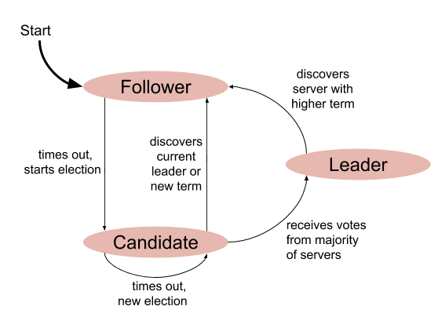

This is Part 1 in a series of posts describing the Raft distributed consensus algorithm and its complete implementation in Go. Here is a list of posts in the series:
- Part 0: Introduction
- Part 1: Elections (this post)
- Part 2: Commands and log replication
- Part 3: Persistence and optimizations
- Part 4: Key/Value database
- Part 5: Exactly-once delivery
In this part, I'm going to explain the general structure of our Raft implementation and focus on the leader election facet of the algorithm. The code for this part includes a fully functional test harness with some tests you can run to experiment with the system. It doesn't answer client requests though, and it doesn't maintain a log; all of that will be added in part 2.
Code structure
A few words on how the Raft implementation is structured; this applies to all parts in the series.
Typically, Raft is implemented as an object you embed into some service. Since we're not actually developing a service here, but only studying Raft itself, I've created a simple Server type that wraps a ConsensusModule type to isolate the interesting parts of the code as much as possible:

The consensus module (CM) implements the heart of the Raft algorithm, and is in file raft.go. It's completely abstracted away from the details of networking and connections to other replicas in the cluster. The only fields in ConsensusModule relevant to networking are:
// id is the server ID of this CM.
id int
// peerIds lists the IDs of our peers in the cluster.
peerIds []int
// server is the server containing this CM. It's used to issue RPC calls
// to peers.
server *Server
In the implementation, each Raft replica calls the other replicas in the cluster its "peers". Each peer in the cluster has a unique numeric ID, and a list of IDs of all its peers. The server field is a pointer to the containing Server (implemented in server.go), which enables ConsensusModule to send messages to peers. We'll see how it's done later on.
The goal of this design is to leave all the networking details out of the picture, focusing on the Raft algorithm. In general, to map the Raft paper onto this implementation all you need is the ConsensusModule type and its methods. The Server code is a fairly straightforward Go networking scaffold, with some minor intricacies to enable rigorous testing. I won't spend time on it in this series, but feel free to ask questions if something is not clear about it.
Raft server states
On a high level, a Raft CM is a state machine with 3 states [1]:
This can be a little confusing since part 0 spent a lot of time explaining how Raft helps implement state machines; as is often the case, the term state is overloaded here. Raft is an algorithm for implementing arbitrary replicated state machines, but Raft also has a small state machine inside it. Going forward, which state is meant where should be clear from context - and I'll make sure to point it out when it isn't.
In a typical steady-state scenario, one server in a cluster is a leader, while all the others are followers. While we'd like things to continue this way forever, the goal of Raft is to be fault tolerant, so we're going to spend most of our time discussing atypical, failure scenarios, where some servers crash, others get disconnected, etc.
As was mentioned before, Raft uses a strong leadership model. The leader answers client requests, adds new entries to the log and replicates them to followers. Every follower is always ready to take over leadership in case the leader fails or stops communicating. This is the "times out, start election" transition from Follower to Candidate in the diagram.
Terms
Just like in regular elections, those in Raft have terms. A term is the period of time for which a certain server is a leader. A new election triggers a new term, and the Raft algorithm ensures that a given term has a single leader.
The analogy shouldn't be taken too far, however, since Raft elections are very different from real elections. In Raft, the elections are much more cooperative; the goal of a candidate is not to win election at all costs - all candidates share the goal of having some suitable server win the election in any given term. We'll talk more about what "suitable" means here shortly.
Election timer
A key building block of the Raft algorithm is the election timer. This is the timer every follower runs continuously, restarting it every time it hears from the current leader. The leader is sending periodic heartbeats, so when these stop arriving a follower assumes that the leader has crashed or got disconnected, and starts an election (switches to the Candidate state).
Q: Wouldn't all followers become candidates simultaneously?
A: The election timer is randomized, and this is one of the keys to Raft's simplicity. Raft uses this randomization to lower the chance of multiple followers running elections simultaneously. But even if they do become candidates at the same time, only one will be elected as a leader for any given term. In rare cases where the vote becomes split such that no candidate can win, a new election (with a new term) will run. While it's theoretically possible to re-run elections forever, the chance of this happening gets much lower with each election round.
Q: What if a follower gets disconnected (partitioned) from the cluster? Won't it start an election because it doesn't hear from a leader?
A: This is the insidiousness of network partitions, because the follower has no way of distinguishing who is partitioned. Yes, it will start an election. But if it's this follower that has been disconnected, this election will simply go nowhere - since it can't contact the other peers, it won't get any votes. It will likely keep spinning in the candidate state (restarting a new election every once in a while) until it reconnects to the cluster. We'll study this scenario in more detail later on.
Inter-peer RPCs
Raft has two kinds of RPCs peers send each other. For detailed arguments and rules for these RPCs please see Figure 2 in the paper. I will briefly discuss their goals:
- RequestVotes (RV): used only in the candidate state; candidates use it to request votes from peers in an election. The reply contains an indication of whether a vote is granted.
- AppendEntries (AE): used only in the leader state; leaders use this RPC to replicate log entries to followers, but also to send heartbeats. This RPC is periodically sent to each follower even if there are no new log entries to replicate.
Diligent readers will infer from the above that followers don't send any RPCs. This is correct; followers don't initiate RPCs to peers, but they have an election timer running in the background. If this timer elapses without hearing from a current leader, the follower becomes a candidate and starts sending RVs.
Implementing the election timer
It's time to dive into the code. Unless stated otherwise, all the code samples shown below are taken from this file. I won't provide a full listing of the fields of the ConsensusModule struct - you can see it in that file.
Our CM implements the election timer by running the following function in a goroutine:
func (cm *ConsensusModule) runElectionTimer() {
timeoutDuration := cm.electionTimeout()
cm.mu.Lock()
termStarted := cm.currentTerm
cm.mu.Unlock()
cm.dlog("election timer started (%v), term=%d", timeoutDuration, termStarted)
// This loops until either:
// - we discover the election timer is no longer needed, or
// - the election timer expires and this CM becomes a candidate
// In a follower, this typically keeps running in the background for the
// duration of the CM's lifetime.
ticker := time.NewTicker(10 * time.Millisecond)
defer ticker.Stop()
for {
<-ticker.C
cm.mu.Lock()
if cm.state != Candidate && cm.state != Follower {
cm.dlog("in election timer state=%s, bailing out", cm.state)
cm.mu.Unlock()
return
}
if termStarted != cm.currentTerm {
cm.dlog("in election timer term changed from %d to %d, bailing out", termStarted, cm.currentTerm)
cm.mu.Unlock()
return
}
// Start an election if we haven't heard from a leader or haven't voted for
// someone for the duration of the timeout.
if elapsed := time.Since(cm.electionResetEvent); elapsed >= timeoutDuration {
cm.startElection()
cm.mu.Unlock()
return
}
cm.mu.Unlock()
}
}
It begins by selecting a pseudo-random election timeout, by calling cm.electionTimeout. The range we're using here is from 150 to 300 milliseconds, as suggested in the paper. As most methods of ConsensusModule, runElectionTimer locks the struct while accessing fields. This is essential because the implementation tries to be as synchronous as possible, which is one of Go's strengths. This means that sequential code is... sequential, and not split across multiple event handlers. RPCs still happen concurrently, though, so we have to protect the shared data structure. We'll get to the RPC handlers soon.
The main loop in this method runs a ticker for 10 ms. There are more efficient ways of waiting for events, but this idiom results in the simplest code. Each loop iteration happens after the next 10 ms have elapsed. Theoretically this could sleep for the whole election timeout, but then it would be less responsive and somewhat harder to debug/follow in logs. We check if the state is still as expected [2] and the term hasn't changed. If anything is off, we terminate the election timer.
If enough time has passed since the last "election reset event", this peer starts an election and becomes a candidate. What is this election reset event? It's any of the things that can terminate an election - for example, a valid heartbeat was received, or a vote given to another candidate. We'll see this code shortly.
Becoming a candidate
We've seen above that once enough time has passed without the follower hearing from a leader or another candidate, it starts an election. Before looking at the code, let's think about the things we need to run an election:
- Switch the state to candidate and increment the term, because that's what the algorithm dictates for every election.
- Send RV RPCs to all peers, asking them to vote for us in this election.
- Wait for replies to these RPCs and count if we got enough votes to become a leader.
In Go all of this logic can be collected into a single function:
func (cm *ConsensusModule) startElection() {
cm.state = Candidate
cm.currentTerm += 1
savedCurrentTerm := cm.currentTerm
cm.electionResetEvent = time.Now()
cm.votedFor = cm.id
cm.dlog("becomes Candidate (currentTerm=%d); log=%v", savedCurrentTerm, cm.log)
votesReceived := 1
// Send RequestVote RPCs to all other servers concurrently.
for _, peerId := range cm.peerIds {
go func(peerId int) {
args := RequestVoteArgs{
Term: savedCurrentTerm,
CandidateId: cm.id,
}
var reply RequestVoteReply
cm.dlog("sending RequestVote to %d: %+v", peerId, args)
if err := cm.server.Call(peerId, "ConsensusModule.RequestVote", args, &reply); err == nil {
cm.mu.Lock()
defer cm.mu.Unlock()
cm.dlog("received RequestVoteReply %+v", reply)
if cm.state != Candidate {
cm.dlog("while waiting for reply, state = %v", cm.state)
return
}
if reply.Term > savedCurrentTerm {
cm.dlog("term out of date in RequestVoteReply")
cm.becomeFollower(reply.Term)
return
} else if reply.Term == savedCurrentTerm {
if reply.VoteGranted {
votesReceived++
if votesReceived*2 > len(cm.peerIds)+1 {
// Won the election!
cm.dlog("wins election with %d votes", votesReceived)
cm.startLeader()
return
}
}
}
}
}(peerId)
}
// Run another election timer, in case this election is not successful.
go cm.runElectionTimer()
}
The candidate starts by voting for itself - initializing votesReceived to 1 and setting cm.votedFor = cm.id.
It then issues RPCs in parallel to all its peers. Each RPC is done in its own goroutine, because our RPC calls are synchronous - they block until a response is received, which can take a while.
This is a good place to demonstrate how RPCs are done:
cm.server.Call(peer, "ConsensusModule.RequestVote", args, &reply)
We use the Server pointer contained in the ConsensusModule.server field to issue a remote call, with ConsensusModule.RequestVotes as the remote method name. This ends up calling the RequestVote method of the peer given in the first argument.
If the RPC succeeds, some time has passed so we have to check the state to see what our options are. If our state is no longer candidate, bail out. When can this happen? For example, we might have won the election because there were enough votes in the other RPC calls. Or one of the other RPC calls heard from a server with a higher term, so we switched back to be a follower. It's important to remember that in case of a flaky network, the RPC can take a long while to arrive - when we have the reply, the rest of the code may have moved on and it's important to gracefully give up in such cases.
If we're still a candidate when the reply is back, we check the term of the reply and compare it to the original term we were on when we sent the request. If the reply's term is higher, we revert to a follower state. This can happen if another candidate won an election while we were collecting votes, for example.
If the term is the same as the one we sent out, check if a vote was granted. If this server has the majority of the votes (including the vote it granted itself), it becomes a leader.
Note that the startElection method is not blocking. It updates some state, launches a bunch of goroutines and returns. Therefore, it should also start a new election counter in a goroutine - which it does on the last line. This ensures that if nothing useful comes out of this election, a new one will begin after the usual timeout. This also explains the state checks in runElectionTimer: if this election does turn the peer into a leader, the concurrent runElectionTimer will just return when observing a state it didn't expect to be in.
Becoming a leader
We've seen the startLeader call in startElection when the vote tally shows this peer has won. Here it is:
func (cm *ConsensusModule) startLeader() {
cm.state = Leader
cm.dlog("becomes Leader; term=%d, log=%v", cm.currentTerm, cm.log)
go func() {
ticker := time.NewTicker(50 * time.Millisecond)
defer ticker.Stop()
// Send periodic heartbeats, as long as still leader.
for {
cm.leaderSendHeartbeats()
<-ticker.C
cm.mu.Lock()
if cm.state != Leader {
cm.mu.Unlock()
return
}
cm.mu.Unlock()
}
}()
}
This is actually a fairly simple method: all it does is run the heartbeat ticker - a goroutine that calls leaderSendHeartbeats every 50 ms, as long as this CM is still the leader. This is the code for leaderSendHeartbeats:
func (cm *ConsensusModule) leaderSendHeartbeats() {
cm.mu.Lock()
savedCurrentTerm := cm.currentTerm
cm.mu.Unlock()
for _, peerId := range cm.peerIds {
args := AppendEntriesArgs{
Term: savedCurrentTerm,
LeaderId: cm.id,
}
go func(peerId int) {
cm.dlog("sending AppendEntries to %v: ni=%d, args=%+v", peerId, 0, args)
var reply AppendEntriesReply
if err := cm.server.Call(peerId, "ConsensusModule.AppendEntries", args, &reply); err == nil {
cm.mu.Lock()
defer cm.mu.Unlock()
if reply.Term > savedCurrentTerm {
cm.dlog("term out of date in heartbeat reply")
cm.becomeFollower(reply.Term)
return
}
}
}(peerId)
}
}
It's somewhat similar to startElection, in the sense that it launches a goroutine per peer to send an RPC. This time the RPC is AppendEntries (AE) with no log contents, which plays the role of a heartbeat in Raft.
Similarly to processing a RV reply, if the RPC returns a term higher than our own, this peer switches to become a follower. It's time to examine the becomeFollower method:
func (cm *ConsensusModule) becomeFollower(term int) {
cm.dlog("becomes Follower with term=%d; log=%v", term, cm.log)
cm.state = Follower
cm.currentTerm = term
cm.votedFor = -1
cm.electionResetEvent = time.Now()
go cm.runElectionTimer()
}
It sets the CM's state to follower and resets its term and other important state fields. It also starts a new election timer, since this is something a follower should always have running in the background.
Answering RPCs
So far we've seen the active parts of the implementation - the parts that initiate RPCs, timers and state transitions. The presentation is not complete before we see the server methods - procedures which other peers invoke remotely. Let's start with RequestVote:
func (cm *ConsensusModule) RequestVote(args RequestVoteArgs, reply *RequestVoteReply) error {
cm.mu.Lock()
defer cm.mu.Unlock()
if cm.state == Dead {
return nil
}
cm.dlog("RequestVote: %+v [currentTerm=%d, votedFor=%d]", args, cm.currentTerm, cm.votedFor)
if args.Term > cm.currentTerm {
cm.dlog("... term out of date in RequestVote")
cm.becomeFollower(args.Term)
}
if cm.currentTerm == args.Term &&
(cm.votedFor == -1 || cm.votedFor == args.CandidateId) {
reply.VoteGranted = true
cm.votedFor = args.CandidateId
cm.electionResetEvent = time.Now()
} else {
reply.VoteGranted = false
}
reply.Term = cm.currentTerm
cm.dlog("... RequestVote reply: %+v", reply)
return nil
}
Note the check for a "dead" state. We'll talk about it later on.
It starts with the familiar logic of checking if the term is out of date and becoming a follower. If it's already a follower, the state won't change but the other state fields will reset.
Otherwise if the caller's term is aligned with ours and we haven't voted for another candidate yet, we'll grant the vote. We never grant a vote for RPCs from older terms.
This is the code for AppendEntries:
func (cm *ConsensusModule) AppendEntries(args AppendEntriesArgs, reply *AppendEntriesReply) error {
cm.mu.Lock()
defer cm.mu.Unlock()
if cm.state == Dead {
return nil
}
cm.dlog("AppendEntries: %+v", args)
if args.Term > cm.currentTerm {
cm.dlog("... term out of date in AppendEntries")
cm.becomeFollower(args.Term)
}
reply.Success = false
if args.Term == cm.currentTerm {
if cm.state != Follower {
cm.becomeFollower(args.Term)
}
cm.electionResetEvent = time.Now()
reply.Success = true
}
reply.Term = cm.currentTerm
cm.dlog("AppendEntries reply: %+v", *reply)
return nil
}
This logic should also align with the election parts of Figure 2 in the paper. One tricky condition to understand is this:
if cm.state != Follower {
cm.becomeFollower(args.Term)
}
Q: What if this peer is a leader - why does it become a follower to another leader?
A: Raft guarantees that only a single leader exists in any given term. If you carefully follow the logic of RequestVote and the code in startElection that sends RVs, you'll see that two leaders can't exist in the cluster with the same term. This condition is important for candidates that find out that another peer won the election for this term.
States and goroutines
It's worth doing a recap of all the possible states a CM can be in, and the different goroutines running in them:
Follower: when the CM is initialized to be a follower, and in each invocation of becomeFollower, a new goroutine starts running runElectionTimer. This is the companion of followers. Note that there can be more than one running at once for short periods of time. Suppose a follower gets a RV from a leader in a higher term; this will trigger another becomeFollower call that launches a new timer goroutine. But the old one will exit without doing anything, as soon as it notices a changed term.
Candidate: a candidate also has the election goroutine ticking in parallel, but in addition it has a number of goroutines to send RPCs. It has the same safeguards as a follower for stopping an "old" election goroutine if a new one started running. Do recall that RPC goroutines may take a very long time to finish, so it's essential for them to exit quietly if they notice they are out of date by the time the RPC call returns.
Leader: a leader does not have an election goroutine, but it does have the heartbeat goroutine ticking every 50 ms.
There's an additional state making an appearance in the code - the Dead state. This is purely for orderly shutdown of a CM. A call to Stop sets the state to Dead and all goroutines take care to exit as soon as they observe this state.
Having all these goroutines running may be concerning - what if some of them remain, lingering in the background; or worse, they repeatedly leak and their number grows without bounds? This is what leak checking is for, and several of the tests have leak checking enabled. These tests run nontrivial Raft election sequences and ensure that no stray goroutine is found running at the end of the test (after Stop has been called and some time was given for stragglers to exit).
Runaway server and increasing terms
To conclude this part in the series, let's study a tricky scenario that may occur and how Raft handles it. I find this example very interesting and instructive. Here I'm trying to present it as a story, but you might want to use a piece of paper to follow the states of the different servers. If you can't follow the example - please send me an email - I'll gladly fix it to make it clearer.
Consider a cluster with three servers: A, B and C. Suppose that A is the leader, the starting term is 1 and the cluster is happily chugging along. A is sending heartbeat AE RPCs to B and C every 50 ms, and gets prompt responses within a few ms; each such AE resets B's and C's electionResetEvent, so they remain as contented followers.
At some point, due to a temporary hiccup in its network router, server B gets partitioned from A and C. A is still sending it AEs every 50 ms, but these AEs either error out immediately or after some long-ish timeout by the underlying RPC engine. There's not much A can do about it, but it's no big deal. We haven't talked about log replication yet, but since two of the three servers are alive, the cluster has a quorum to commit client commands.
What about B? Let's say that when it was disconnected, its election timeout was set to 200 ms. Approximately 200 ms after the disconnection, B's runElectionTimer goroutine realizes it hasn't heard from the leader for the election timeout; B has no way of distinguishing who's at fault here, so it will become a candidate and start a new election.
B's term will thus become 2 (while A's and C's are still at 1). B will dutifully send out RV RPCs to A and C to ask them to vote for it; but of course, these RPCs get lost in the jumbled wires of B's network router. No need to panic! B's startElection launched another runElectionTimer goroutine right at the start, and that goroutine waits for, say 250 ms (remember, our timeout range is random between 150-300 ms) to see if anything important happened as a result of the previous election. Nothing did for B, because it's still completely isolated. So runElectionTimer starts another new election, incrementing the term to 3.
And so on and so forth; B's router takes a few whole seconds to reset itself and go back online. In the meantime, B's rerunning elections every once in a while and its term has already reached 8.
At this point, the network partition is fixed and B is reconnected to A and to C.
Shortly after, an AE RPC arrives from A. Recall that A keeps sending them dutifully every 50 ms, even though B didn't reply for a while.
B's AppendEntries is called and sends back a reply with term=8.
A gets this reply in leaderSendHeartbeats, examines the reply's term and notices it's higher than its own. It updates its own term to 8 and becomes a follower. The cluster temporarily loses a leader.
Now multiple things can happen, depending on the timing. B is a candidate, but it may have sent its RVs before the network revived; C is a follower, but within its own election timeout it will become a candidate because it stops receiving periodic AEs from A. A became a follower, and will also turn into a candidate within its election timeout.
So any of the three servers can win the next election. Note that this is only because we don't actually replicate any logs here. As we'll see in the next part, in realistic scenarios A and C will likely add some new client commands while B is away, so their logs will be more up to date. Therefore, B cannot become the new leader - a new election will occur which will be won by either A or C; we'll revisit this scenario again in the next part.
Assuming no new commands were added since B disconnected, it's absolutely fine for a leader change to occur as a result of the reconnection.
If this may seem inefficient - it's true. The leader change is not really necessary here, because A was perfectly healthy throughout the scenario. But keeping the invariants simple at the cost of some efficiency in corner cases is one of the design choices made by Raft. What counts is efficiency in the common case (without any disruptions), because this is the state clusters spend 99.9% of their time in.
What's next
To ensure that your understanding of the implementation is not only theoretical, I strongly encourage you to play with the code a bit.
The repository README has some detailed instructions about interacting with the code, running its tests and observing results. The code comes with many tests that exercise specific scenarios (including the scenario described in the previous section) and it's very instructive to run a single test and watch the Raft logs. Notice all the cm.dlog(...) calls in the code? The repository comes with a special tool that helps visualize these logs alongside each other in a HTML file - see the README for instructions. Run some tests, watch their logs, and feel free to sprinkle your own dlog calls to get a better understanding of when different parts of the code are exercised.
Part 2 in the series will describe a more complete Raft implementation that actually handles client commands and replicates them throughout the cluster. Stay tuned!
| [1] | This diagram is the same as Figure 4 in the the Raft paper. This is a good place for a reminder that in this series of posts I assume you've already read that paper. |
| [2] | The check for state being not follower and not candidate may seem strange. Can this peer become a leader suddenly, not through elections initiated in runElectionTimer? Read on to see how an election counter is restarted by candidates. |